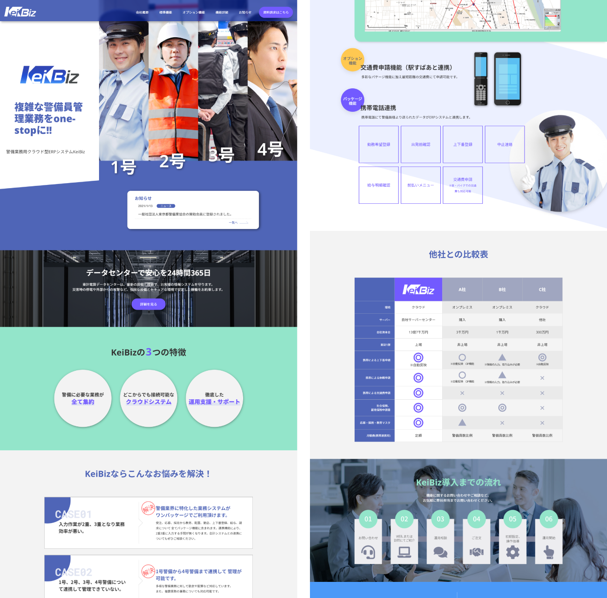
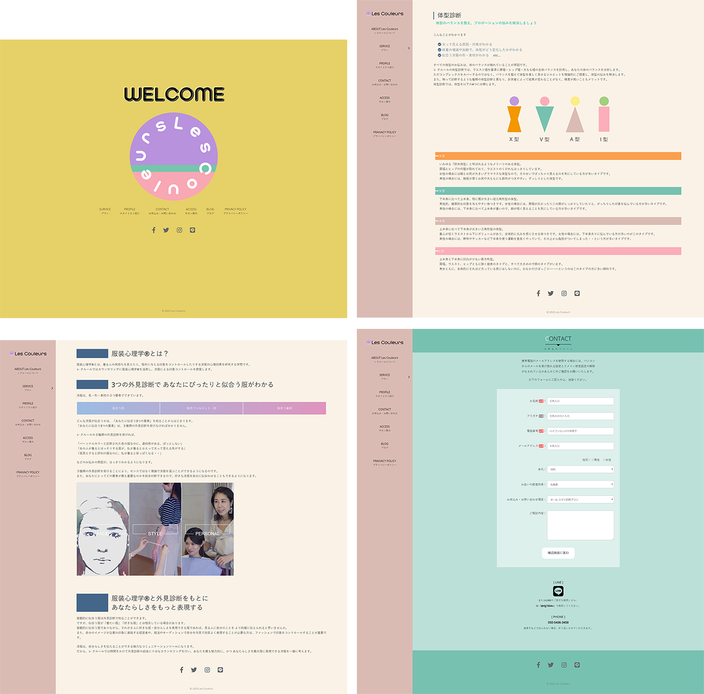
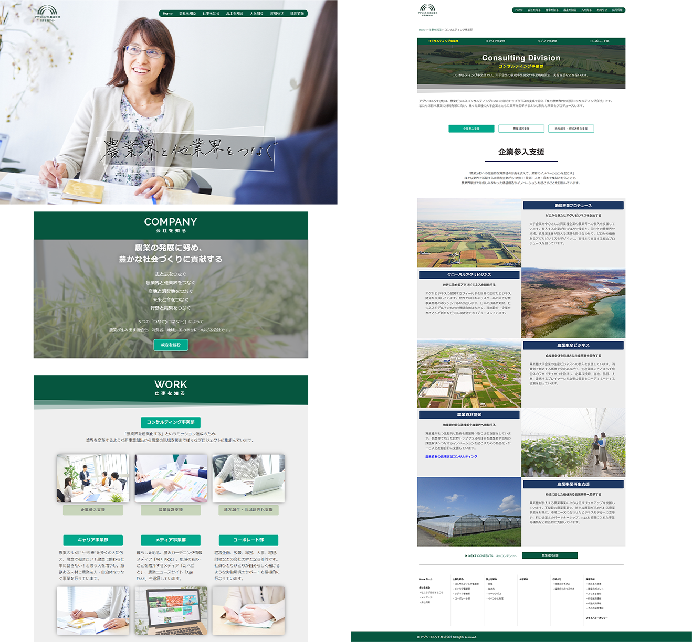
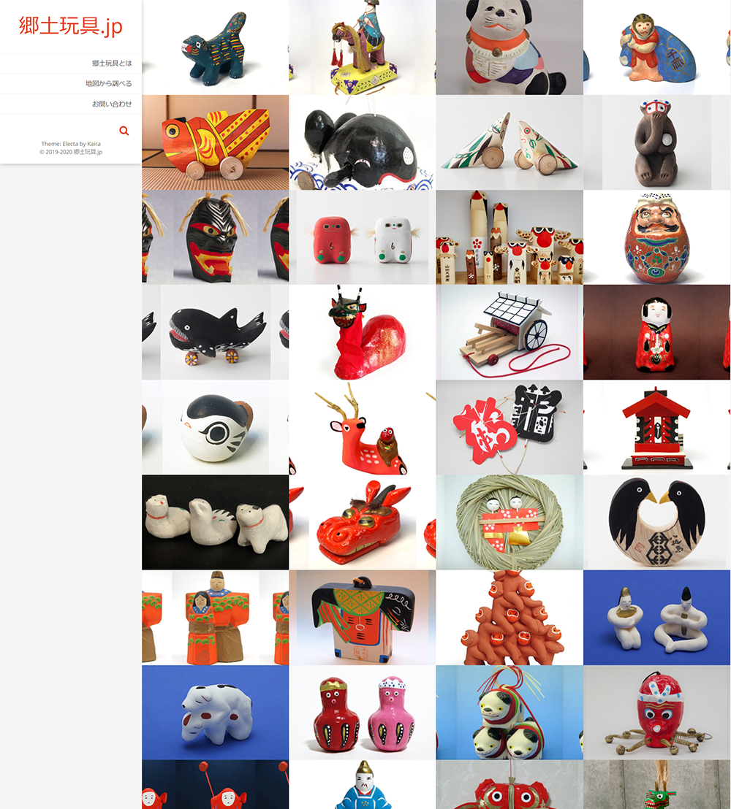
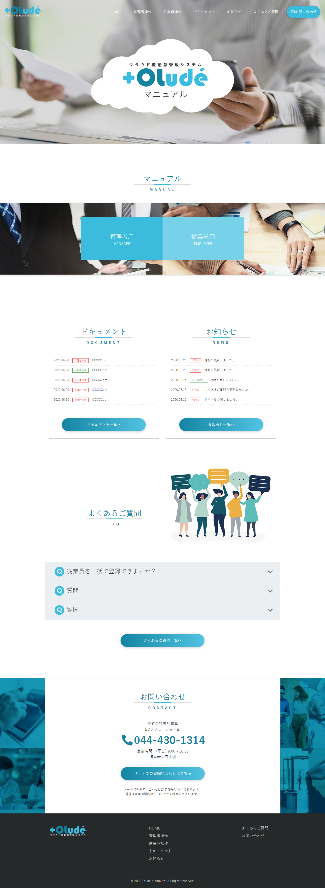
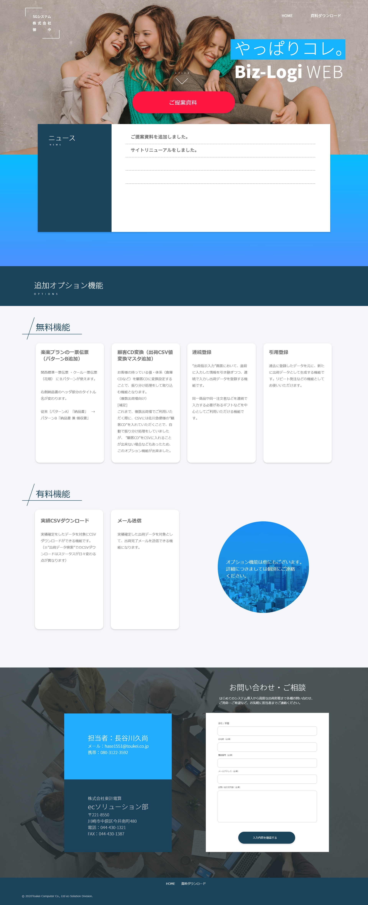
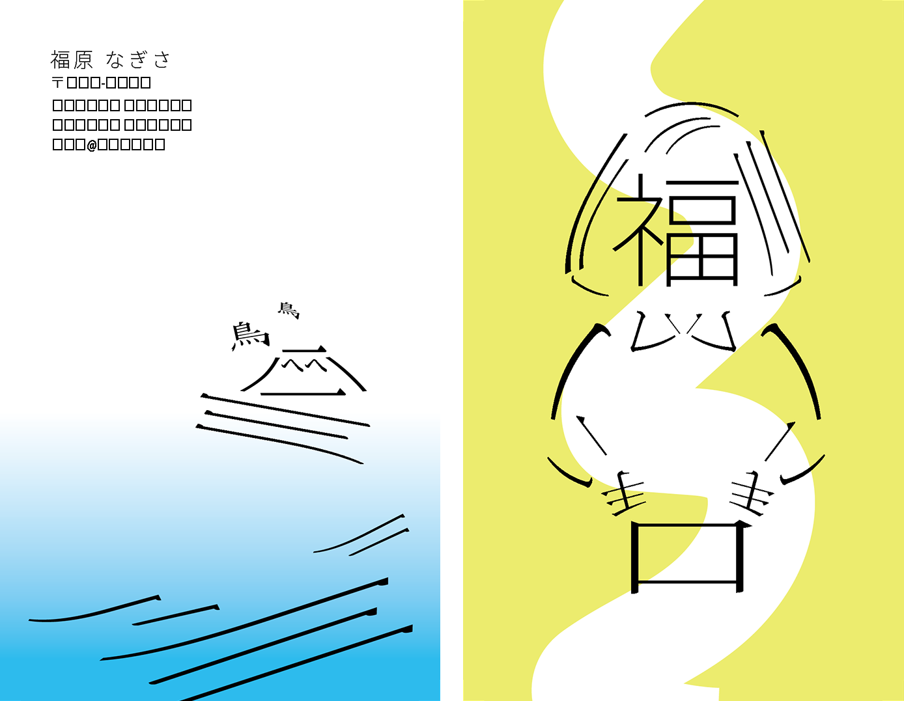
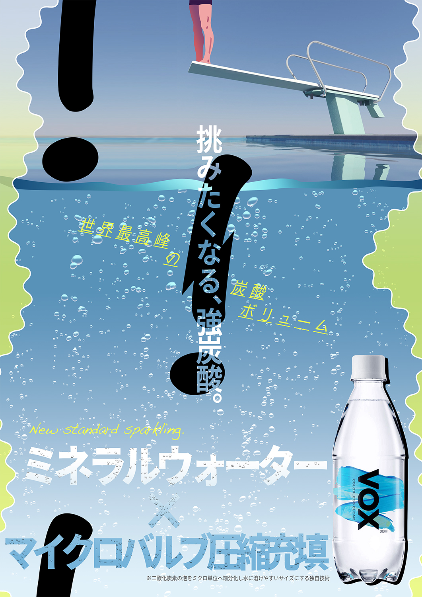
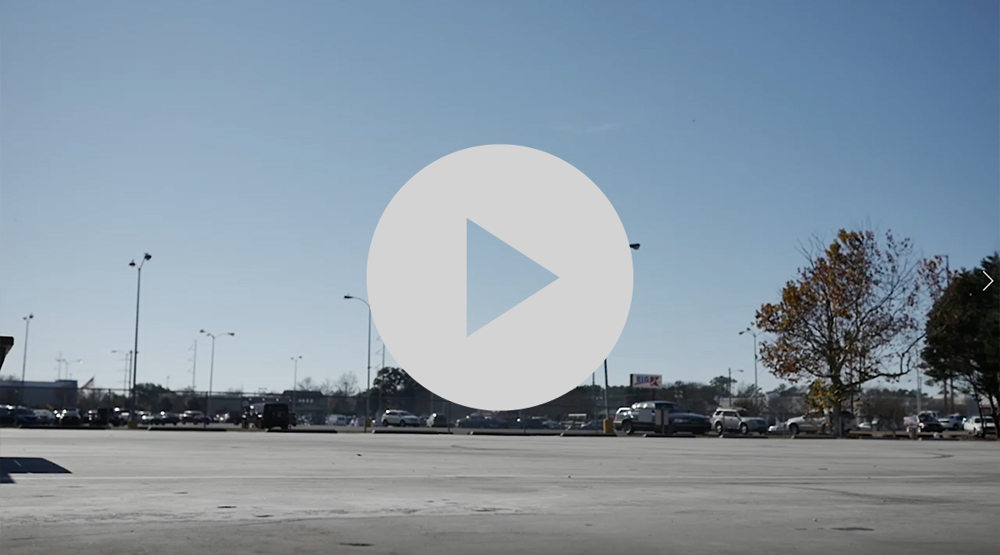
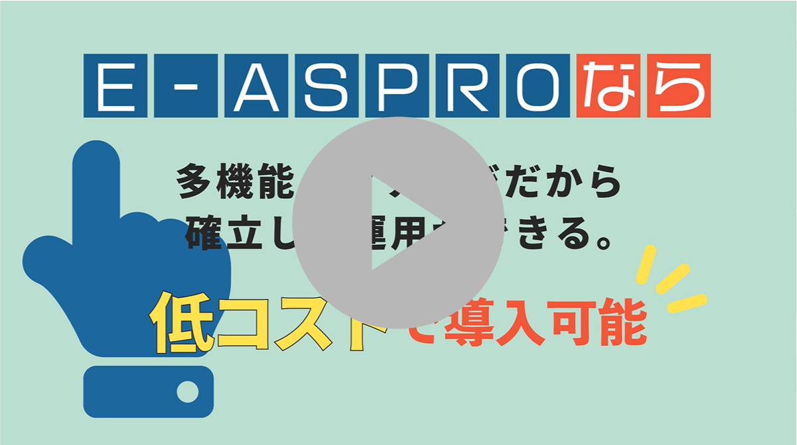

NAGISA FUKUHARA
portfolio
デザイン HTML・CSS / コーディング
HTML5 CSS3 JavaScript PHP
Photoshop Illustrator AfterEffects Premier
WORKS
Web
Graphic
Video
Web
警備業務用クラウド型ERPシステムKeiBiz
http://www.e-shop.co.jp/keibiz/index.html
ERPシステムのLPサイトを制作しました。
青を基調に信頼や堅牢といった警備業に沿うイメージで作成しました。多数ある機能紹介を見やすく、かつ固すぎないイメージで伝えるのが課題でした。
構成 / デザイン / コーディング / HTML,CSS / JavaScript

パーソナルスタイリスト鴨井咲子
http://lescouleurs-style.com/index.html
パーソナルスタイリスト鴨井咲子様のウェブサイトを制作しました。
依頼人の要望をデザインに落とし込むのが難しく、何度もイメージの擦り合わせを重ねながら最終的には希望を反映することができました。
初のフルページ制作を手掛けたウェブサイトです。
構成 / デザイン / コーディング / HTML,CSS / JavaScript / PHP

株式会社アグリコネクト 採用情報サイト
http://agri-connect.co.jp/careers/
株式会社アグリコネクト様から依頼を受け、ゼミの学生メンバーと採用情報サイトを制作しました（在学時）。主にデザインとコーディングを担当しました。
大まかなデザインは元々あったWordPressをhtmlへ移行するもので、構造を解析するのが特に苦心した点です。
デザイン / コーディング / HTML,CSS

日本郷土玩具 ウェブサイト
http://cbc-gict.net/nagi/wp/
WordPressでの自由課題で制作しました（在学時）。
日本全国の代表的な郷土玩具とその由来をまとめたサイトです。地図をクリックしてその地方の玩具を参照できるように工夫しました。
WordPress（テンプレート使用）

製品マニュアルサイト(参考画像)

資料提案サイト(参考画像)

Graphic
HUBシステムの製品
ロゴデザイン
使用ツール/Illustrator
ERPシステムの製品ロゴ/アイコン" width="500px">
ERPシステムの製品
ロゴ/アイコンデザイン
使用ツール/Illustrator
ICT系専門学校
ロゴデザイン
(学校課題)
使用ツール/Illustrator

名刺デザイン
(学校課題)
使用ツール/Illustrator
飲料水ポスターデザイン
(学校課題)
使用ツール/Photoshop

Video

実写 + アニメーション / 27sec
（学校課題）
※音が出ます（音量注意）
使用ツール/AfterEffects
実写 + アニメーション / 43sec
（学校課題）
※音が出ます（音量注意）
使用ツール/AfterEffects
販促アニメーション / 24sec
使用ツール/AfterEffects

販促アニメーション / 46sec
使用ツール/AfterEffects
販促アニメーション / 76sec
使用ツール/AfterEffects
ABOUT
福原なぎさ
宮城県出身。神奈川県在住。
美術大学を卒業後、社会人経験を経て、専門学校で2年間プログラミングを学び、
現在デザイナー・フロントエンドエンジニアとして修行中。
Nagisa Fukuhara
Born in Miyagi Prefecture. Living in Kanagawa.
I studied art at the Art University,
and graduated.
In addition, I studied programming at a vocational
school and practicing as a designer & front-end engineer.
HTML5 CSS3 JavaScript PHP SQL Vue.js ...勉強中
Photoshop Illustrator AfterEffects Premier
美術・建築鑑賞、植物育成、休日に植物店を巡るのが趣味